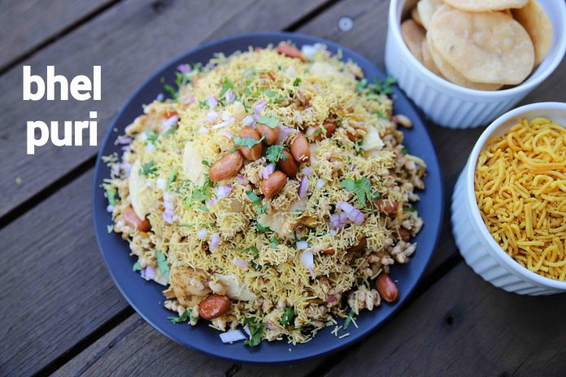

Bhel Puri

Description
Bhel Puri (or Bhel Poori) is a famous Mumbai street food and crunchy, savory Indian chaat recipe,
also known as Bhel.
Bhelpuri is made by tossing together crispy puffed rice, crunchies (namkeen) like crushed papdi, peanuts,
masala chana dal (spicy fried split chickpeas), veggies like onion, tomato, potato, flavored with chaat masala,
three chutneys - sweet tamarind chutney, spicy green chutney, and hot pungent red garlic chutney and finally
garnished with lots of cilantro add sev (fried thin gram flour noodles).
Ingredients
- 2 cup murmura / puffed rice / churumuri
- ½ onion (finely chopped)
- ½ potato / aloo (boiled & cubed)
- 3 papdi (crushed)
- 3 tbsp mixture
- 2 tbsp fried peanuts
- 2 tbsp tomato (finely chopped)
- ½ tsp chaat masala
- ¼ tsp kashmiri red chilli powder
- ¼ tsp salt
- 3 tbsp tamarind chutney / imli chutney
- 2 tbsp green chutney
- 1 tsp lemon juice
- 2 tbsp sev
- 1 tsp coriander (finely chopped)
Steps
- Firstly, in a large mixing bowl take 2 cups murmura. dry roast murmura if they are not crisp.
- Add ½ onion, ½ potato, 3 crushed papdi, 3 tbsp mixture and 2 tbsp fried peanuts.
- Also add 2 tbsp tomato, ½ tsp chaat masala, ¼ tsp chilli powder and ¼ tsp salt.
- Mix well making sure the spices are combined well.
- Further add 3 tbsp tamarind chutney, 2 tbsp green chutney and 1 tsp lemon juice.
- Mix well without turning murmura soggy.
- Add 2 tbsp sev and give a mix.
- Finally, enjoy bhel puri topped with few crushed papdi and garnished with onion, coriander.